29 giugno 2026
Finita la scuola ci siamo visti a casa tua per ballare Just dance, io continavo a cambiare, anche se stavamo finendo i soldi per le rose. Sono sempre più felice di starti vicino.
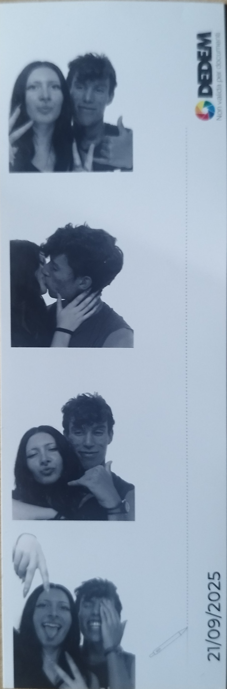
21 settembre 2025
La nostra prima foto, ancora non realizzavo completamente la persona fantastica che avevo a fianco, il mio cervello non capiva perché ero così felice come puoi vedere nella foto, ti considerava "errore di calcolo" Da lì abbiamo deciso di farci una foto tessera ogni mese, e io avrei voluto imparare ad amarti.
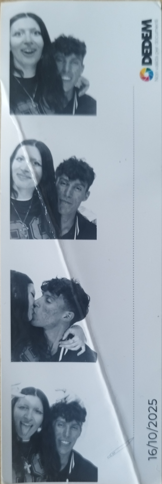
16 ottobre 2025
indosso la giacca bellissima che ancora oggi non voglio mai rovinare e mi fa sentire più vicino a te ogni volta che la indosso. In questa foto possiamo già vedere come stiamo cambiando, e da lì non volevo più essere quello di prima, stavi crescendo come sto facendo ancora ora.
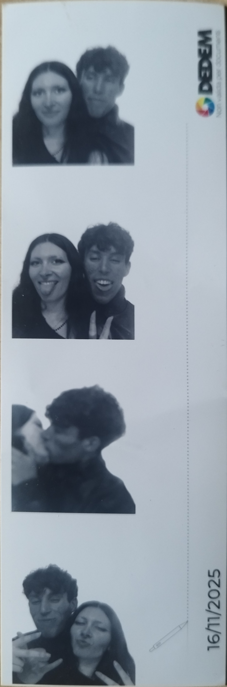
16 novembre 2025
Stiamo ancora crescendo e te eri stupita stessimo insieme ormai da più di 3 mesi e mi avevi avvisato non saresti stata semplice, ma non volevo semplicità, avevo ormai trovato la mia persona e avrei fatto di tutto per stargli a fianco, quello che tu alla fine hai fatto totalmente com me.
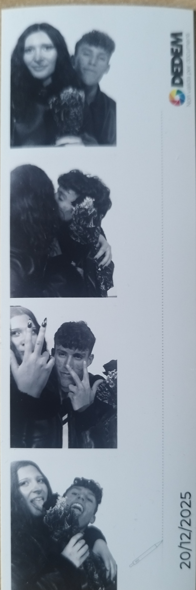
20 dicembre 2025
Siamo noi al tuo primo compleanno insieme ti ho regalato una rosa Nera, e il vinile di Nightmare before Christmas, e abbiamo assieme prenotato un locale per il tuo compleanno. Tralasciando i regali, la parte più bella è stata arrivare lì al tuo compleanno, e finalmente solo abbiamo riso e fatto i dementi quanti potevamo. È stata la prima cena con i tuoi, e ci lasciavamo le mani solo per mangiare anche se eravamo davanti, continuando a guardarci negli occhi, io spero ancora tu ti sia divertita fino alla parte in cui abbiamo ballato con i camerieri la macarena e altri balli assieme.
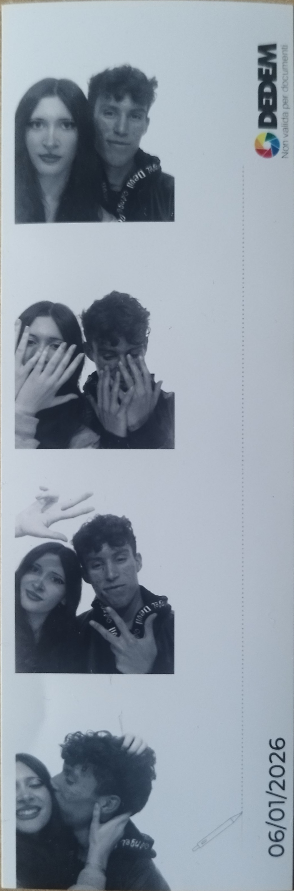
6 gennaio 2026
Tornata dalle vacanze mi sono fiondato da te a Monticelli in bici col piano solo di abbracciarti però i tuoi mi hanno fatto stare a con te, e ci siamo dati un abbraccio lunghissimo. Ancora più innamorato di te non mi staccavo per un attimo.
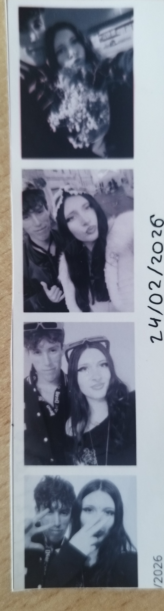
24 febbraio 2026
Hai accettato di essere il mio Valentino con un mio bigliettino, passando il nostro primo S.valentino assieme al banco freschi, oltre a essere uno dei punti in cui ci siamo divertiti di più, è stato il giorno in cui mi sono inginocchiato a te dandoti l' anello , avevo finalmente scelto che in ogni mio futuro avrei voluto te, che solo te un giorno potessi essere mia moglie. Inoltre mi hai fatto passare il nostro primo carnevale insieme questo periodo, in cui ci siamo divertiti come bambini.
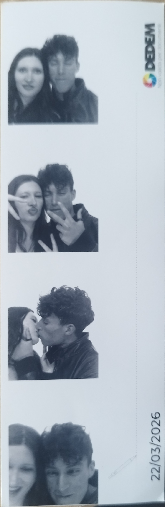
22 marzo 2026
Posso soprattutto dire che ho passato il compleanno migliore della mia vita. Volevo incontrarti per il mio compleanno e tu a mia insaputa mi hai organizzato una festa a sorpresa in un parco, regalandomi i biglietti del concerto di Tyler the creator. Ma il fatto di aver festeggiato il mio compleanno dopo tanti anni, grazie a te e non ne sapevo niente, mi rimarrà per sempre indelebile dentro di me.
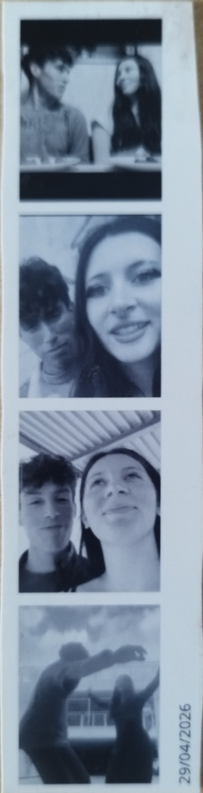
29 aprile 2026
Semplicemente due bambini che si divertono assieme condividendo un singolo neurone, abbiamo ballato come pankake e continuavano a fare giochi stupidi fra di noi ridendo continuamente.
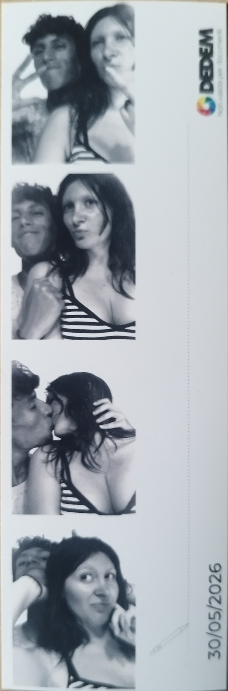
30 maggio 2026
Stava finendo la scuola, e cominciavano già a programmare i momenti in cui avremmo dovuto vederci in estate, ma in questi periodo soprattutto, arriva Tyler il nostro gatto e quello che rimarrà un figlio, a cui darai un amore immenso, e comincerà ad essere dipendente da te, come io con te.
29 giugno 2026
Finita la scuola ci siamo visti a casa tua per ballare Just dance, io continavo a cambiare, anche se stavamo finendo i soldi per le rose. Sono sempre più felice di starti vicino.
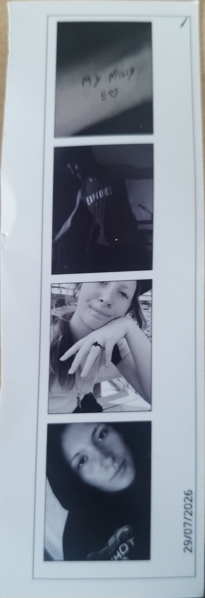
29 luglio 2026
Non ci siamo visti per un mese dovendoci sempre confortare a distanza, te mi hai fatto dei messaggi su Minecraft per ricordarmi quanto mi ami da aprire ogni giorno, io delle cartoline da aprire nei tuoi 15 giorni di vacanze, con le figurine su di noi. Nonostante la distanza siamo riusciti a stare vicini, ma ricordo bene che appena ci siamo visti ci siamo saltati addosso.
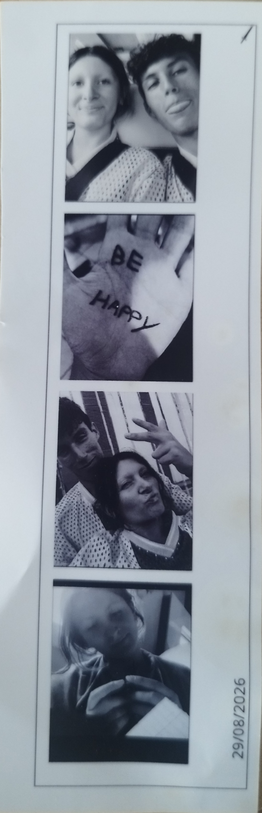
29 agosto 2026
Tornata dalle vacanze mi hai preso dei vestiti abbinati, e siamo andati al concerto che aspettavamo da marzo. Ero felice come un bambino, al concerto ci siamo ritrovati in mezzo a Migliaglia di persone, ho dovuto usare la forza per cercare di non farti travolgere e non ci staccavamo per un secondo. Eravamo luridi e sudati, ma comunque tu mi hai baciato in mezzo a Migliaglia di persone al concerto abbracciata a me. La marti aveva una maia di paperino, e siamo tornati a casa ma purtroppo mi sono addormentato su di te. È stato il nostro primo concerto e con te è stato un ricordo bellissimo dall viaggio in camper fino all' entrata. L' ennesima prova di quanto ti riesca a darmi una serenità non mi sarei mai aspettato da nessuno.